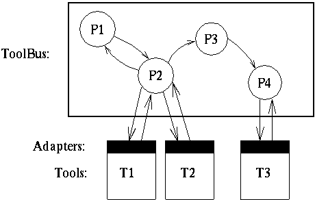

The ToolBus is a software application architecture developed at the University of Amsterdam by J.A. Bergstra and P. Klint\cite{BK95.toolbus}. The ToolBus utilizes a scripting language based on process algebra\cite{BW90} to describe the communication between software tools. A ToolBus \emph{script} describes a number of processes that can communicate with each other and with tools living outside the ToolBus. A language-dependent adapter that translates between the internal ToolBus data format and the data format used by the individual tools makes it possible to write every tool in the language best suitable for the task(s) it has to perform.

The following sections give an overview of the most important ToolBus features. There is also a more complete overview of the ToolBus primitives.
Communication inside the ToolBus
There are two mechanisms available for processes in the ToolBus to communicate with each other, message passing and selective broadcasting. A process can synchronously send a message using thesnd-msg
primitive which must be received by another process using the
rec-msg
primitive. A process can send a note using
snd-note to all processes that have subscribed,
using subscribe,
to that particular note type. The receiving processes read notes
asynchronously using rec-note, at low priority.
Transmitting notes amounts to asynchronous selective broadcasting.
Communication between ToolBus and tools
A ToolBus process can initiate communication with a tool by sending a message to a tool usingsnd-do, or snd-eval
when an answer is expected.
A tool can initiate communication by sending an event
to the ToolBus. A ToolBus process receives this event using
using the rec-event primitive and must acknowledge the event
using the snd-ack-event primitive.
The execution and termination of the tools attached to the ToolBus, as well
as their connection/disconnection can be controlled explicitly by appropriate
primitives (See Section \ref{tb-primitives}).
Process composition
More complex processes can be created using process composition operators for choice (+ operator), sequential composition
(. operator),
parallel composition (||} operator),
iteration (* operator) and
guarded (conditional) execution
(the if/then/fi operator). The process creation
primitive create can be used to create new processes.
Types and variables
All terms within the ToolBus are typed. The ToolBus defines a number of basic types for booleans, integers, reals, strings, and binary strings. Complex types can be formed using a list constructor or function application. The type term is a supertype of all other types. Thelet/in/endlet
construction makes it possible to declare variables.
UI process that
handles user interface events and a CALC process communicating
with the calculator tool.
process UI is
let
UI : ui,
E : str,
V : str
in
execute(ui, UI?) .
( rec-event(UI, expr(E?)) .
snd-msg(calc, expr(E)) .
rec-msg(calc, expr(E, V?)) .
snd-ack-event(UI, expr(E, V))
) *
rec-event(UI, quit) .
snd-ack-event(UI, quit) .
shutdown("Goodbye!")
endlet
process CALC is
let
Calc : calc,
E : str,
V : str
in
execute(calc, Calc?) .
( rec-msg(calc, expr(E?)) .
snd-eval(Calc, expr(E)) .
rec-value(Calc, expr(E, V?)) .
snd-msg(calc, expr(E, V))
) * delta
endlet
Tool declarations make it possible for the ToolBus to find and execute
tools. A tool declaration introduces a new type, that can later be
used to declare tool identifier variables of that type.
In our example script, two tools are defined:
ui tool, that implements the user interface.
calc tool, that implements the calculator.
tool ui is { command = "wish-adapter -script ui.tcl" }
tool calc is { command = "calc" }
Finally, the ToolBus configuration primitive
toolbus(UI,CALC) starts the two processes in parallel.
toolbus(UI,CALC)